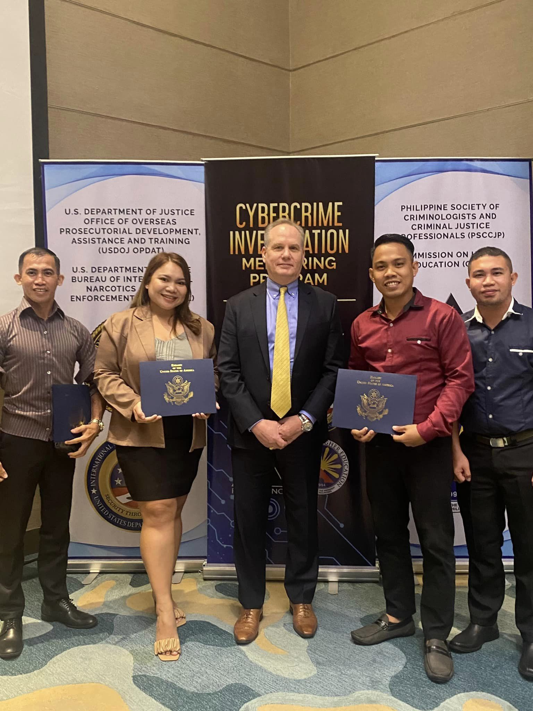
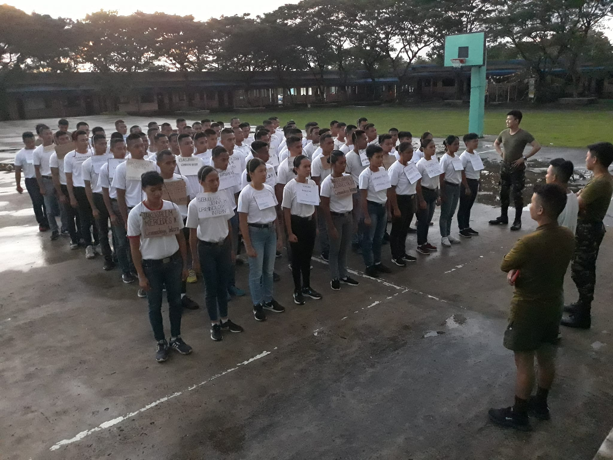
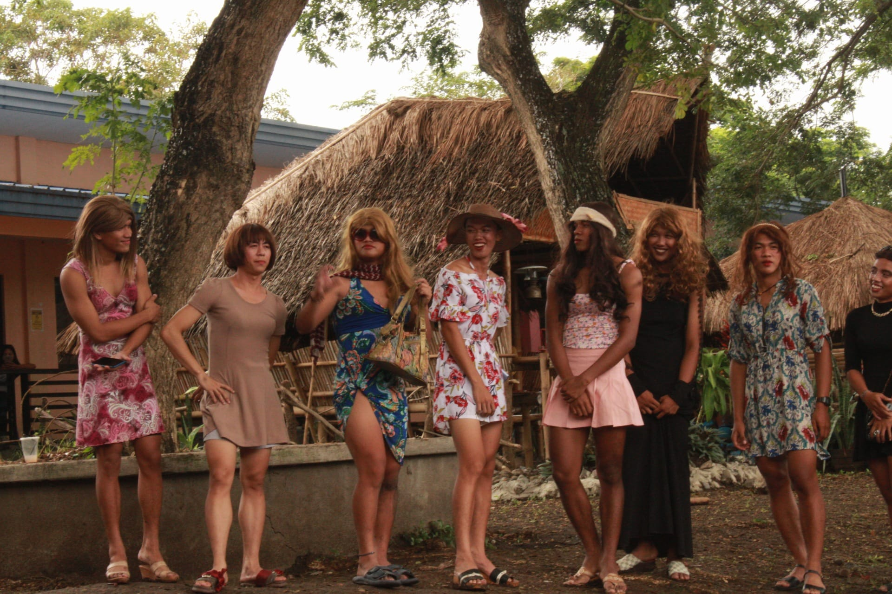
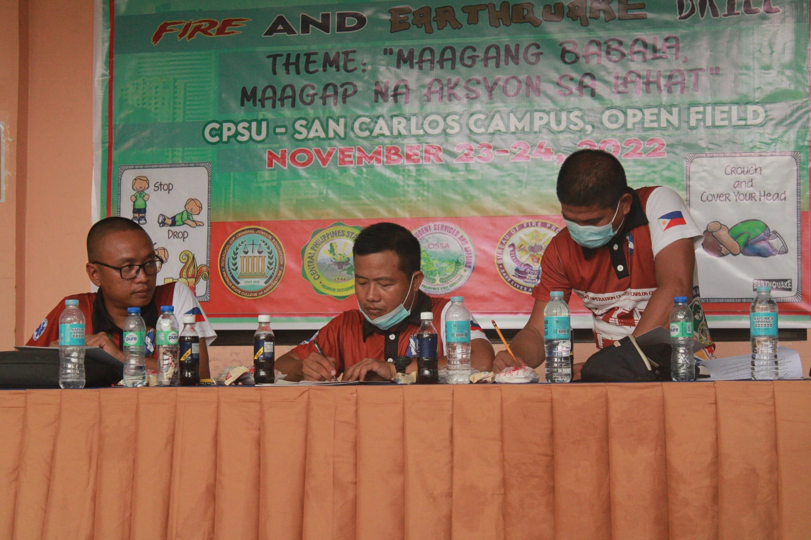

<section class="features">
    <div class="container">

      <div class="section-title">
        <h2>FEATURES</h2>
        <p>THESE ARE SOME EVENTS IN THE COLLEGE OF CRIMINOLOGY </p>
      </div>

      <div class="row" data-aos="fade-up">
        <div class="col-md-5">
          
        </div>
        <div class="col-md-7 pt-4">
          <h3>Cybercrime Investigation Mentoring Program for Criminology Academia </h3>
          <p class="fst-italic">
            Four CPSU-CCJE Faculty members have officially completed Cybercrime Investigation Mentoring Program for Criminology Academia at Crimson Resort and Spa, Boracay Island, Malay, Aklan, from December 5-9, 2022.
          </p>
          
          <p>
            They are as follows:<br>
1. Emmanuel L. Onofre- CPSU-Main Campus<br>
2. Raymond Rolin D. Hilado- CPSU-San Carlos Campus<br>
3. Shenai F. Juance- CPSU-Hinigaran Campus<br>
4. Michel Betonga- CPSU-Victorias Campus<br>
<br>The said training was sponsored and provided by the United States Department of Justice Office of Overseas Prosecutorial Development, Assistance and Training (USDOJ OPDAT), U.S. Department of State Bureau of International Narcotics and Law Enforcement Affairs (INL) and Philippine Society of Criminologist and Criminal Justice Professional (PSCCJP) Commision on Higher Education (CHED).
The training was centered on improvement of the participants' skills in teaching Cybercrime and conducting Incident Response and Forensic Digital Analysis.
          </p>
        </div>
      </div>

      <div class="row" data-aos="fade-up">
        <div class="col-md-5 order-1 order-md-2">
          
        </div>
        <div class="col-md-7 pt-5 order-2 order-md-1">
          <h3>4th Year's PRE-OJT TRAINING</h3>
          <p class="fst-italic">
            CCJE Condicts Pre-OJT Training to 4th year Criminology students for the preparation on their internship program...
            The day was filled with various activities like opening ceremony & reception rites,practice of various military drills and class discussion...
          </p>
          <p>
            #cenphiliancriminology
            #commandoDRAGONS!
            #HOOOOOOooooooooRrrrAAAAAaaaaaahhhhh!
          </p>
        </div>
      </div>

      <div class="row" data-aos="fade-up">
        <div class="col-md-5">
          
        </div>
        <div class="col-md-7 pt-5">
          <h3>CRIMINOLOGY DAY 2022</h3>
          <p> The College of Criminal Justice Education through the Criminology Students Society was celebrating its CRIMINOLOGY Day with a theme: Tibay, Galing, at Pagkakaisa, Tatak Kriminolohiya!</p>
          <p>
            It was a successful event, in the morning we had a search for Mr and Ms BALIKTARAN 2022 wherein the Boys must wear Girly Things and the Girl must wear Boyish Thing, we also had Spoken Poetry, Music Parody and Singing Contest! 
          </p>
        </div>
      </div>

      <div class="row" data-aos="fade-up">
        <div class="col-md-5 order-1 order-md-2">
          
        </div>
        <div class="col-md-7 pt-5 order-2 order-md-1">
          <h3> Monthly Convocation (Earthquake Informational Drive and Earthquake Drill)</h3>
          <p class="fst-italic">
            The College of Criminal Justice Education together with the Office of Student Services and Affairs with the help of Criminology Students Society have successfully conducted its DAY 2 of Monthly Convocation with this Month topic, "Disaster Risk Reduction with Fire and Earthquake Drill" with a theme "Maagang Babala, Maagap na Aksyon sa Lahat" 
          </p>
          <p>
            The Convocation was attended by the Guest Speaker Sir Broce from the San Carlos City Risk Reduction Management Office he give Informational Drive about Earthquake and assess during Earthquake Drill.
"We cannot prevent earthquake but we can assure that people are better prepared and more resilient "
          </p>
        </div>
      </div>

    </div>
  </section><!-- End Features Section -->